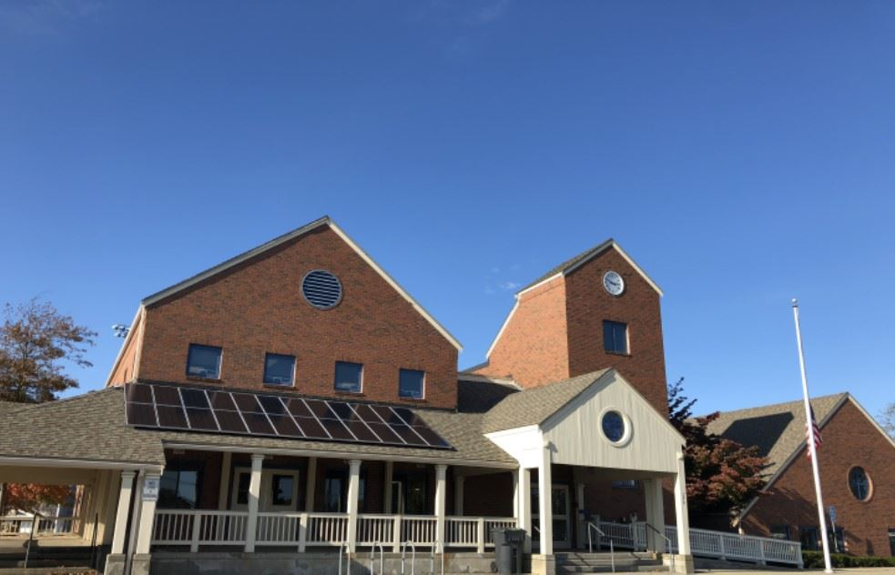

Pickleball events are held at the indoor basketball courts at gus canty community center. The address is: 790 Main St Falmouth, get a ride there or take bus 12.
Pickleball events are held at the indoor basketball courts at gus canty community center. The address is: 790 Main St Falmouth, get a ride there or take bus 12.
Made by Kunio Saito on 1/9/2025